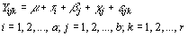

|
7.
Product and Process Comparisons
7.4. Comparisons based on data from more than two processes 7.4.2. Are the means equal?
|
|||
| The 2-way
ANOVA is probably the most popular layout in Design of Experiments
The breakdown of the total (corrected for the mean) sums of squares
|
To begin with, let us define
a factorial experiment:
An experiment that utilizes every combination of factor levels as treatments is called a factorial experiment. In a factorial experiment with factor A at a levels and factor B at b levels, the model for the general layout can be written as  where m is the overall mean response, ti is the effect due to the i-th level of factor A, bj is the effect due to the j-th level of factor B and gij is the effect due to any interaction between the i-th level of A and the j-th level of B. When an a x b factorial experiment is conducted with an equal number of observation per treatment combination, the total (corrected) sum of squares is partitioned as: SStotal = SS(A) + SS(B) + SS(AB) + SSE where AB represents the interaction between A and B. The resulting ANOVA table for an a x b factorial experiment
is
|
||